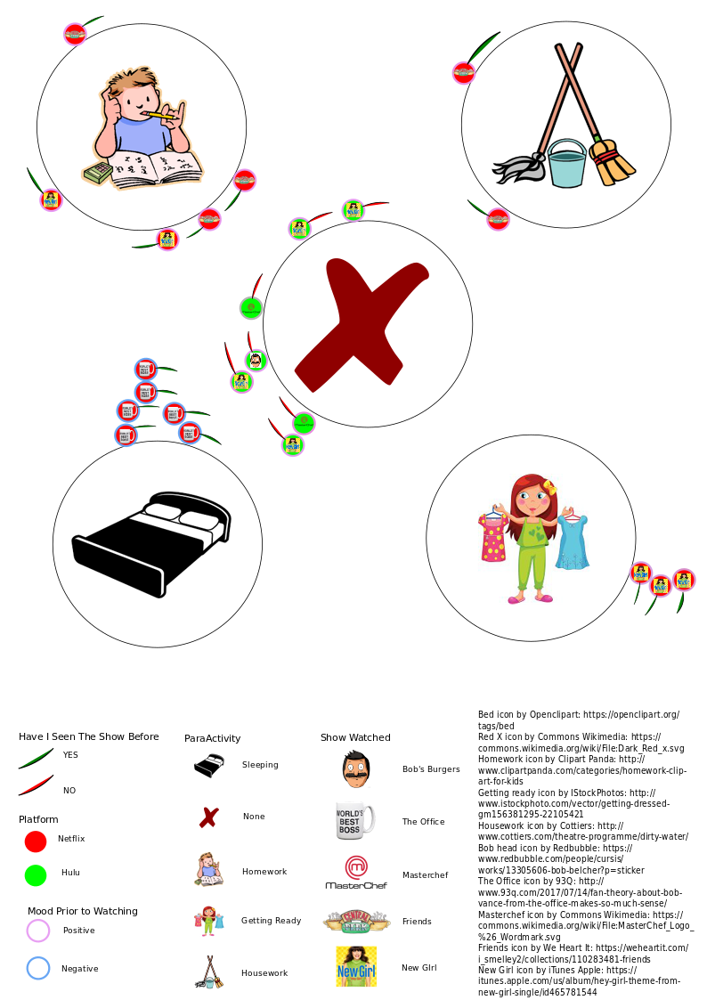

Antonia Baker - ENGL 3844
My data story project was originally based off of observing my own viewing preferences on Netflix and Hulu. I kept track of things such as genre, time, show, and paraActivity while watching in order to make connections between variables and see if there were any significant relationships. After analyzing my data, I wanted to further delve into privacy protection rights and how companies can access and use your data and information.
 My data visualization serves as a visual aide that represents the relationships and connections in my data. I noticed things like that the only time I do not do another activity while watching a show, is when I have never seen it before, and that I prefer a show like The Office when I am going to bed. Ultimately, this data visualization emphasizes how much information companies like Netflix or Hulu could gain about me by monitoring my viewing preferences. This leads into the bigger picture of what rights to privacy the public actually has regarding what we watch.
In this explanatory video, the concept of viewing privacy rights is explored. Privacy rights are continuously being debated and amended and often times, the public is unaware of what information of theirs is being shared and used. I believe that this unawareness calls for a discussion about what legislation protects the public and how that legislation is constantly being updated and changed. Video privacy protection laws are particularly interesting to look at when observing the evolution of technology and its role in society as the legislation was originally directed towards video rental facilities and has been altered to adjust for technological advances.
While I learned a great deal of information regarding my own viewing patterns and habits, I also learned about how companies use that data and what hoops they have had to jump through to do so. While exploring concepts such as the Video Privacy Protection Act, it becomes apparent that society is constantly changing and adopting new practices and values, and with these new aspects, new adjustments have to be made to accommodate. Overall, this data story project illustrated how big of a role technology plays in everyday life.